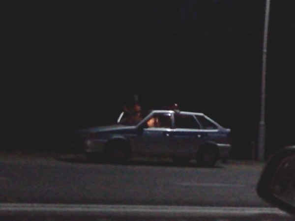
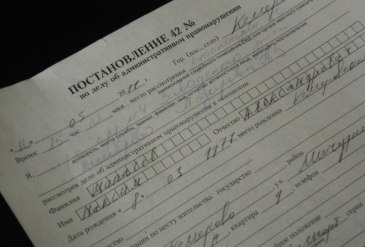

Какие у вас планы на вечер? А на выходные? А какие планы были на выходные в пятницу? Всё задуманное удалось осуществить?
Вечером прошлой пятницы я ехал мимо аэропорта в гости к другу. Ехал особо не торопясь (85 километров в час), времени уже было достаточно много (часов 22) и торопиться уже было некуда — так посидим часок.
Около аэропорта часто тусуются обладающие автомобилями любители потусоваться, из-за них я и не заметил, стоящего рядом с ними экипажа ДНС, оснащённого радаром.
Превышение
Сотрудник помахал мне светящейся палкой, я остановился. Тот рассказал мне про скорость. Мы пошли оформлять протокол. Штраф — 300 рублей. Я еще спросил сколько за превышение на 40-60, те сказали, что вроде 1500. Потом поинтересовались есть ли неоплаченные штрафы. Я сказал что есть. Спросили давно. Я ответил нет.

У одного из сотрудников я еще поинтересовался, как тот относится к стритрейсерам, что стоят позади. «Это больные люди» — ответил сотрудник, другой тем временем запрашивал данные по неоплаченным мною штрафам по рации. Ответ «центра» был таков: «Штрафы не платит. Подходит под 20.25.». 8 марта вам выписывали штраф на 100 рублей за превышение скорости? Да. Оплатили? Нет.
О существовании статьи 20.25 КоАП РФ «Неуплата административного штрафа либо самовольное оставление места отбывания административного ареста» я, конечно знал, и что из неё следует тоже. Но штрафуют меня не часто и вопрос со «сходить до банка всё как-то сливался», что и стало причиной последующих событий.
Тут можно было бы написать, что события развивались стремительно, но это было вовсе не так. Медлительно-тянучий задался вечер.
Итак пункт первый статьи 20.25 гласит: «1. Неуплата административного штрафа в срок, предусмотренный настоящим Кодексом, - влечет наложение административного штрафа в двукратном размере суммы неуплаченного административного штрафа либо административный арест на срок до пятнадцати суток.»
Сотрудники сказали, что нужно ехать в Ленинское РОВД. Был вечер пятницы. Поздний вечер пятницы. С экипажем ГИБДД мы съездили в ГИБДД на Баумана, взяли распечатку штрафов (в смысле они ехали впереди, а я со всей семьёй на своей машине за ними). Потом поехали с Южного на Химиков в РОВД. На Химиков выяснили, что Ленинское РОВД меня принять неготово, так как прописан я в Заводском районе. Экипажу, катавшемуся со мной, тем временем поступил приказ ехать на свой пост (какой-то хмырь порезал таксиста в Суховском, и угнал «Бибику»). Экипаж сказал надо ехать, я за ними. Пока мы доехали до аэропорта преступник уже был найден, возможно даже наказан немного, и мы всё-таки выдвинулись в сторону Заводского РОВД.
КаПэЗэ
Я оставил машину около отделения. Будучи осведомленным о возможном обороте дела выложил из карманов деньги и телефон. Зашёл внутрь. Сотрудник ГИБДД сказал дежурному 20.25, тот ответил: «Сочувствую». Принять решение о наказании в соответствии с КоАП может только судья, судьи вечером в пятницу не работают. В субботу тоже. Да-да и в воскресенье. Сотрудник ГИБДД отдал мне водительское, а себе оставил чувство выполненного долга. И удалился. Дежурный офицер сказал мне: «Вытаскивай шнурки». Как человек , имевший в юности приводы в милицию я понял, что ситуация всё-таки усложнилась. Разрешили позвонить. Даже на сотовый.
В камере жарко. Бетонные стены. 8 шагов в длину, почти 3 в ширину. Из мебели одна узкая скамейка в длину камеры, лежать на которой можно только на боку. В длину помещается 2 человека. Я был вторым. Первый разувшись и раздевшись по пояс спал, отсвечивая наколками на ступнях. В камере напротив сидели два наркомана. Один стоял (ему сесть уже было некуда, да он и не хотел похоже). Жарко. Часов, сотового телефона, ноутбука с интернетом нет. Я такой лёг (ну типа будущее туманно, а типа силы надо экономить). Потом встал. Потом лёг. Потом встал. Потом снова. Еще одного наркомана привезли, потом одного увезли. Потом еще раз. Судьи вечером в пятницу не работают. В субботу тоже. Да-да и в воскресенье.
…
Выходной
Домой я приехал в половине второго ночи. Напрягший родственников, заставивших переживать да и что, греха таить, позабавивший друзей. С повесткой в суд на понедельник.
В субботу решил съездить всё-таки оплатить штрафы. Вообще-то на их оплату даётся 40 дней (10 дней на обжалование, 30 дней на оплату). Предъявить претензии тебе по поводу неоплаты ГИБДД может еще в течение 130 дней. Хотя в этот диапазон у меня попал только вышеупомянутый 100-рублёвый штраф, я подозревал, что это на самом деле не всё, и решил закрыть вопрос. Решил закрыть его гарантированно, поэтому логичным показалось узнать список штрафов в ГИБДД. Заехал в городской. Офицер сказал, что узнать можно только на БауманаПятьдесятДевятьАнна. Съездил на Баумана. По субботам до 17 часов.
Расплата
С утра в понедельник опять съездил на Баумана взял список. Штрафов всего набралось штук 7, на общую сумма около 1600. Кстати новое здание ГИБДД рядом с «Привозом» стоит практически полностью пустое (на этаже, где я получал список только 2 миллиционера). Зачем его построили, в свете того, что и техосмотр от ГИБДД вероятнее всего заберут — непонятно. Но это уже другая история.
Перед судом заехал в Сбербанк на Красноармейской заплатил все штрафы. В Сбербанке их можно оплатить через терминал (нужно знать номер постановления) — комиссия 20 рублей за каждый или через операциониста (есть электронная очередь, не нужно знать ничего, кроме ФИО, я и на Баумана зря ездил) — комиссия, правда уже 30 рублей. Заплатил всё. Выпил кофе в «Сильвере». Пошел через дорогу на суд. Вероятность того, что я не буду ничего писать в блог в течение «до 15 суток» всё еще оставалась ненулевая.
Суд
Суда как такового не было. Заполнил заявление. Написал ходатайство, к котором просил не наказывать. Минут 10 подождал. Секретарь спросила — «Вы уже отсидели? … … …Сутки?… ….» Я сказал. Ну да, почти. В решении судьи было написано: «Подвергнуть административному аресту сроком на 1 сутки».

Советы:
Не водить автомобиль. Если водите не нарушать правил. Если нарушаете не попадаться на штраф. Если попадаетесь, не забывать оплачивать. Если забыли, не попадаться еще раз. Если попались, планировать свой разговор с сотрудниками исходя из возможности проехать в КПЗ. Если разговор не планируется, то хотя планировать КПЗ на будний день или вечер понедельника, вторника, среды, четверга. Если вы девушка, вам вероятно вообще такая перспектива будет не по душе.
Это правда может случиться и с вами. Берегите себя и всё такое.